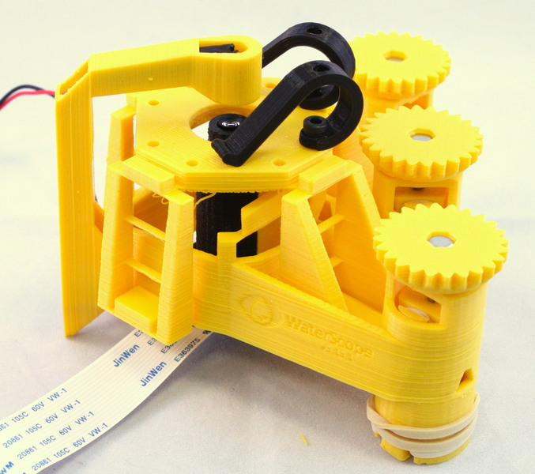
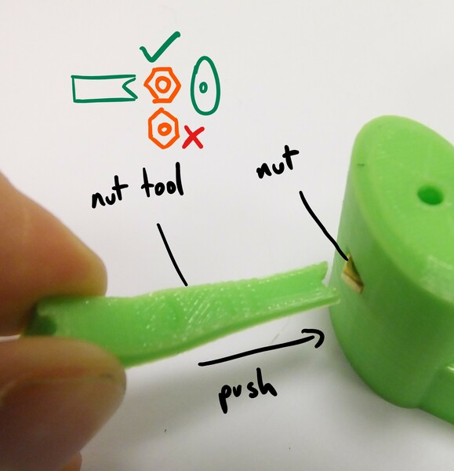

Precision for $100: The OpenFlexure Microscope

The OpenFlexure Microscope is an open-source 3D-printed microscope, based off a precise flexure translation stage. If you're making them in bulk and without the high-res parts, the per-unit price is probably below $100. If you're just putting together one, the price will probably come to more like $200 and you'll find yourself with a lot of spare bolts and screws. At the bottom of this page, we put together a bill of materials so you can see the exact prices.
As standard, the microscope operates in bright-field reflection imaging. It's small with "the volume of a 1kg bag of rice", it's cheap, and it's precise. OpenFlexure is a big endeavor and it’s discussed in various media articles and a paper in Review of Scientific Instruments (open access) written by James Sharkey, Darryl Foo, Alexandre Kabla, Jeremy Baumberg, and Richard Bowman. A new paper characterizing the OpenFlexure stage has been written by Qingxin Meng, Kerrianne Harrington, Julian Stirling, and Richard Bowman.
We can't stress enough how easy this microscope is to make. Detailed assembly instructions can be found on both the Openflexure website, as well as the OpenFlexure Gitlab website. These websites include STL files, and give details on how to print them with cute and helpful step by step picture instructions on how to put them together.

Since we couldn't find a bill of materials, we put one together, rounding costs up to the nearest dollar. Objective not included. As mentioned in the official instructions, components such as the PMMA condenser lens can be squirrely to acquire, and can usually be found via AliExpress searches.
| 25mm M3 Hexagon-head screw | $1.00 |
| M3 Brass Nut | $1.00 |
| M3 Steel Nut | $1.00 |
| M3 Washer | $1.00 |
| M3x8mm screws | $1.00 |
| M2x6mm screws | $1.00 |
| M4x6mm screws | $1.00 |
| 2mm Section 30mm Bore VITON Rubber O-Rings | $5.00 |
| White LED (A nice one) | $10.00 |
| 60 Ohm resistor | $1.00 |
| Raspberry Pi Camera Module V2 | $30.00 |
| Raspberry Pi 3 Model B | $35.00 |
| 28BYJ-48 micro stepper motors and driver board | $14.00 |
| 13mm diameter, 5mm focal length PMMA condenser lens | $5.00 |
| AC127-050-A Tube Lens (Optional) | $50.00 |
| Plastic | $10 |
| Total | $167.00 |